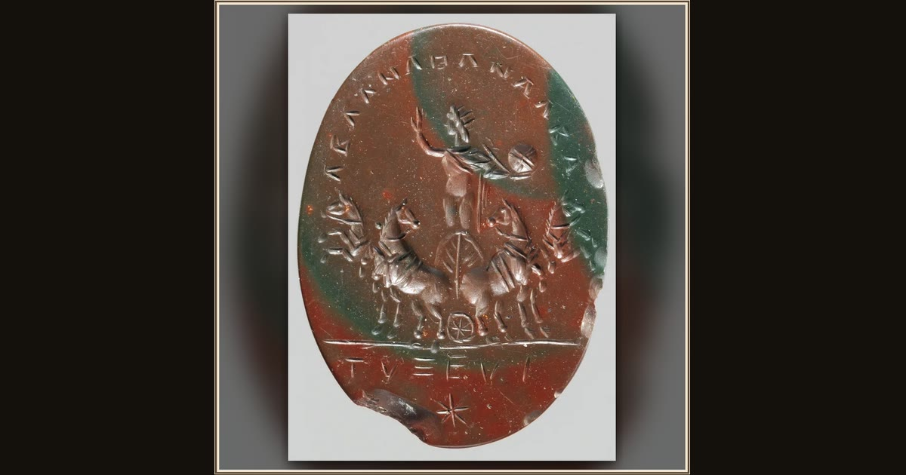

Jasper intaglio: Sol in a quadriga (four-horse chariot)
Roman · ca. 2nd–3rd century CE · met
A Roman jasper gem shows Sol, the Roman Helios, standing in his four-horse chariot with one hand raised, as the hymn pictures Helios riding and shining upon men and gods (9). Explore its place in Homer's The Homeric Hymns, Hymn 31 · To Helios, line 9.